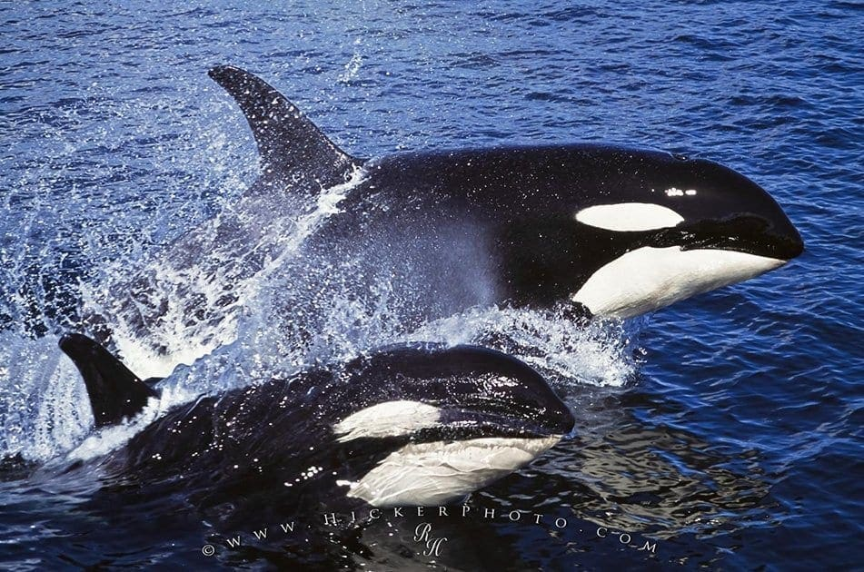

Orcas, also known as killer whales, are remarkable marine mammals famous for their intelligence, strength, and striking appearance. They are the largest members of the dolphin family and are easily recognized by their distinctive black-and-white coloring and tall dorsal fins. Orcas are highly social and intelligent animals with strong family bonds. They are known for their complex communication, impressive learning abilities, and cooperation with one another. Their unique characteristics and fascinating behavior have made them one of the most well-known and admired animals in the marine world.
Scientific Name: Orcinus orca Family: Delphinidae (oceanic dolphins) Size: Males can grow up to 9.8 meters (32 feet) and weigh up to 9,000 kg; females are smaller. Lifespan: Wild females often live 50 to 90 years, while males typically live 30 to 60 years .Speed: They can swim up to 35 mph (55 km/h) in short bursts.
mammals on Earth. Unlike many sea animals that prefer only one type of climate, orcas can survive in a variety of ocean environments. They are often found in the cold waters of the Arctic and Antarctic, where thick sea ice surrounds the ocean, but they can also be seen in temperate and tropical waters. Orcas are commonly spotted in the Pacific, Atlantic, and Southern Oceans. Some populations live near coastlines, while others travel through the open ocean. Their movements can change depending on the availability of food and environmental conditions. Different groups of orcas have adapted to the particular waters where they live, making them highly adaptable ocean explorers. 🌎🐋
From icy polar seas to warmer coastal waters, orcas have made almost every part of the ocean their home!🐋 Diet of Orcas Orcas are apex predators, which means they are at the top of the marine food chain. Their diet is very diverse and depends on the region they live in and the type of orca population. Some orcas mainly eat fish, while others hunt marine mammals.
🐟 Fish:
Many orcas eat fish such as salmon, herring, and tuna. Salmon are fish that live in both rivers and oceans, while herring are small, silvery fish that live in large groups in northern parts of the Atlantic and Pacific Oceans.
🦭 Seals:
Some orcas hunt seals, which are marine mammals that live along coastlines and on sea ice. Seals are found in many cold and temperate waters, including areas around the Arctic and Antarctic.
🦭 Sea lions:
Orcas may also eat sea lions, which are marine mammals known for their external ear flaps and ability to move on land using their flippers. They are commonly found along the coasts of the Pacific Ocean.
🐬 Dolphins:
Some populations of orcas also prey on dolphins, which are intelligent marine mammals found in oceans around the world.
🦑 Squid:
Orcas can also eat squid, soft-bodied ocean animals with tentacles. Squid live in oceans worldwide, from shallow coastal waters to the deep sea.
Orcas are remarkable hunters because different groups have developed different hunting techniques suited to the food available in their environment. Their diet shows how adaptable and intelligent these incredible predators are.
Protecting orcas is important because they face several threats in the ocean. Ocean pollution, plastic waste, underwater noise, climate change, and a decrease in their food supply can make it harder for orcas to survive. Pollution can harm the water they live in, while loud noises from ships and other human activities can interfere with their communication. Changes in the ocean can also affect the fish and other animals that orcas depend on for food. We can help protect orcas by keeping oceans clean, reducing plastic waste, protecting their habitats, and supporting responsible fishing practices. By taking care of the oceans and reducing harmful human activities, we can help protect these intelligent and remarkable animals for future generations. 🌊🐋
| Feature | Orca 🐋 | Human 🧑 |
|---|---|---|
| Habitat | Ocean | Mostly land |
| Breathing | Blowhole | Nose and mouth |
| Movement | Fins and tail | Legs |
1. What is a group of orcas called?
2. Where do orcas live?
3. How do orcas breathe?
4. Are orcas mammals or fish?
5. What do orcas use to communicate?
6. What do orcas use to swim?
7. What is another name for an orca?
Orcas are powerful swimmers and can move quickly through the ocean.
Orcas are highly intelligent and can learn different skills and behaviors.
Orcas use clicks, whistles, and calls to communicate with each other.
Orcas often live in groups called pods and cooperate with one another.
Orcas use teamwork and different hunting techniques to catch their food.
1. Orcas are mammals.
2. Orcas breathe underwater.
3. Orcas live in groups called pods.
4. All orcas eat exactly the same food.
5. Orcas use sounds to communicate.
6. Orcas have gills like fish.
7. Orcas can be found in different oceans around the world.
8. Orcas are the largest members of the dolphin family.
9. Orcas never work together when hunting.
10. A baby orca is called a calf.